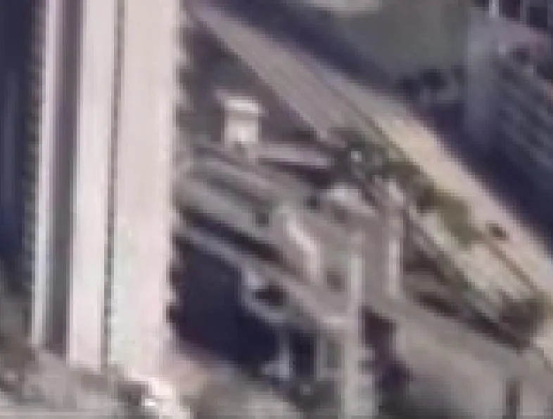

Natura e rilievi, Contea di Lummox
Lake
Spazio naturale di Leonida scoperto sulla mappa di GTA VI, in Contea di Lummox.

L’essenziale
Spazio naturale della mappa di GTA VI, Lake si trova in Contea di Lummox. Visibile o nominato in un trailer, uno screenshot o un’immagine ufficiale, senza descrizione pubblicata da Rockstar: è lo stato “Avvistato in un media ufficiale” della mappa. È classificato come naturale nei dati della community. Nessun luogo reale è stato ancora associato a questo posto. Uno screenshot ufficiale lo mostra: è riportato qui sopra, con il suo credito. I luoghi più vicini sulla mappa: Train Tunnel (a est), Train Bridge (a ovest), The General Store (nome reale, a sud-est).
Identità
| Nome | Lake |
|---|---|
| Categoria | Natura e rilievi (naturale) |
| Contea | Contea di Lummox |
| Stato | Avvistato in un media ufficiale |
| Luogo reale che sembra averlo ispirato | Non identificato |
| Posizione sulla mappa | x 2627, y 807 (centra la mappa) |
| Fonte | Screenshot e trailer ufficiali; individuazione di gtadb.org e dei suoi collaboratori (CC BY 4.0) |
Sulla mappa di Leonida

Dati: GTA VI Landmarks Data, gtadb.org e i suoi collaboratori, CC BY 4.0, modificati per Leonidakit. Licenza: creativecommons.org/licenses/by/4.0
Luoghi più vicini sulla mappa
Segnala un errore su questa paginaCosa è confermato e come lo verifichiamoProvenienza e crediti
Il calcolatore
Quanto tempo di gioco per sistemarti da queste parti?
Una casa, un negozio, un garage: scrivi il prezzo che immagini, i tuoi soldi e quanto guadagni a partita, il calcolatore ti dice quanto tempo serve.